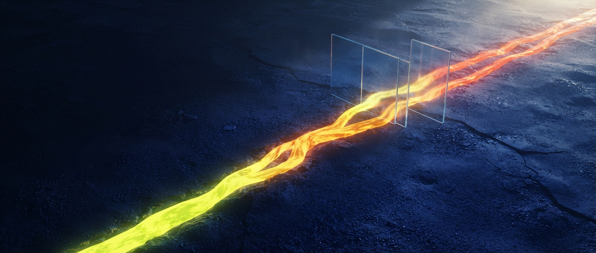
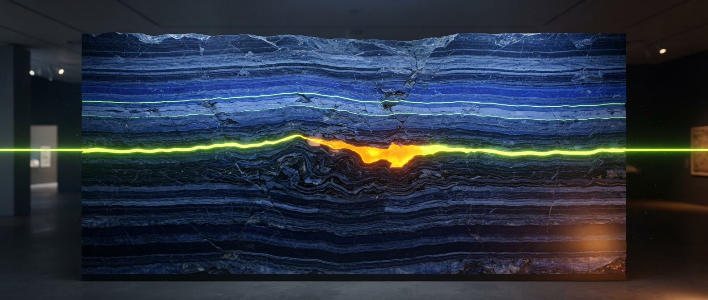
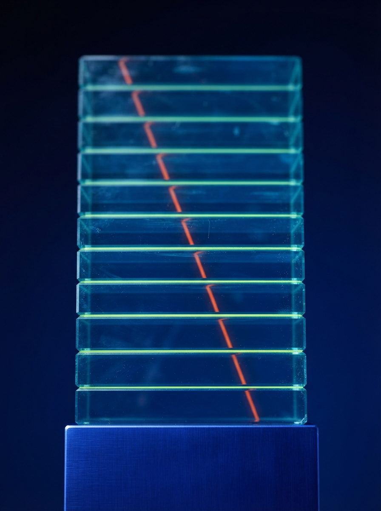
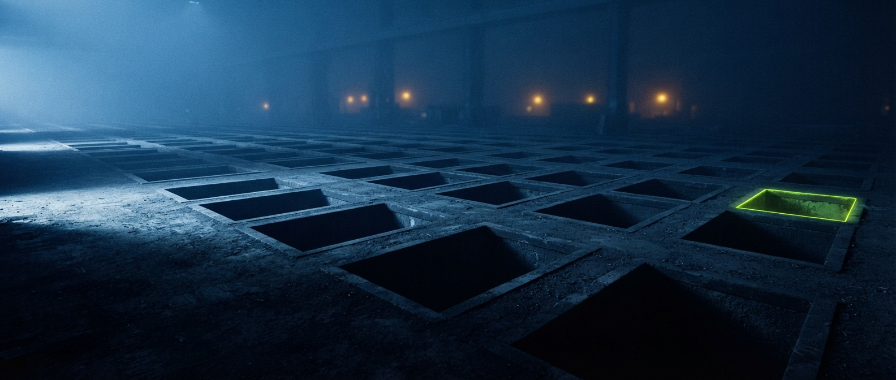
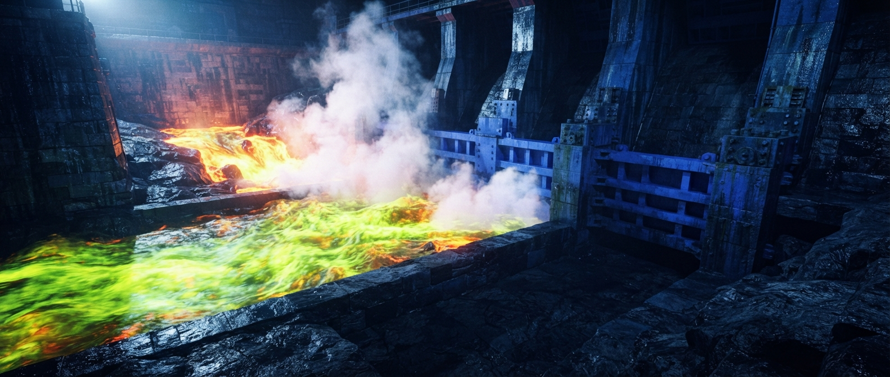
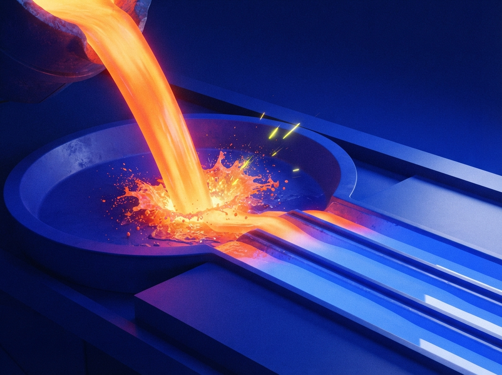
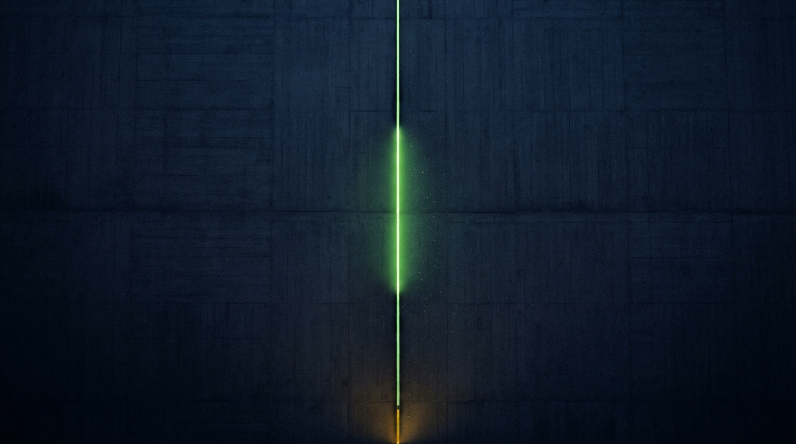
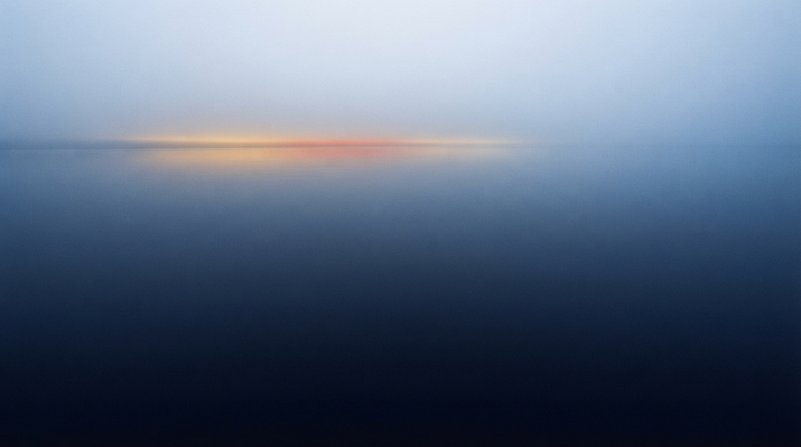
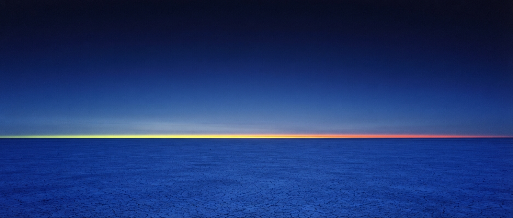

You lose the match
The stake pays the other player. Nothing comes back, and there is no partial return.

Buy coins, stake them on a 1v1 or a tournament, and follow the pot through hold, settlement and payout.

The match is played in the game itself. Boadman does not run the game. It holds the pot, records the result and pays it out.
Coins are bought by card at the current rate and land in your wallet.
That is real money converted into coins.
Entering a 1v1 challenge or a tournament moves the stake out of your wallet straight away.
Committed from that moment. You cannot spend or withdraw it.
From the start of the match until it settles, both stakes sit with Boadman. Neither side can spend, withdraw or re-stake them.
Holding is not protection. Lose, and the held stake pays the other player.
Boadman records the result of the match and the pot pays the winner.
Platform commission is deducted from every settled pot.
A prize is held for 48 hours so other entrants can raise a complaint about cheating. It matures on its own when the window closes.
A complaint raised inside the window freezes the prize until an admin rules.
Winnings convert back to money and pay to a bank account in the same legal name as the Boadman account.
An account in a different name is not paid.

Everything on the platform is priced in coins. Coins are bought with real money by card, and they are the same unit whether you are entering a competition, taking a pot or cashing out.
1 coin = 10p
That is the current rate. It is set on the server and shown at checkout before you pay.
The current rate is not available on this page right now. It is set on the server and shown at checkout before you pay.
A stake is lost when you lose, and it is not returned. Platform commission is deducted from every settled competition.
Commission is configured on the server and shown on a competition page before you enter it.
Commission is not available on this page right now. It is shown on a competition page before you enter it.
Read the termsCompetitions are hosted by Boadman or by players. A host puts up part of the prize pool, entrants pay an entry fee into the rest, and the result of the match decides who takes it.

Live counters sit here once competitions are running. They are left out rather than shown as zeros, because a zero can also mean the counters are unavailable.
There is nothing on the board to enter. A game can only be run here once its publisher licenses it, and none has yet.
Hosted by Boadman
Hosted by Aisha Rahimi, player
Hosted by Kwabena Mensah, player
A stake is lost when you lose, and it is not returned. Platform commission is deducted when a competition settles, and a prize is held for 48 hours before it can be spent.
Read the terms
Five things interrupt a payout. All five are part of how the platform works, not exceptions to it.
The stake pays the other player. Nothing comes back, and there is no partial return.
A complaint about cheating inside the 48 hour hold freezes the prize until an admin rules on it. The prize cannot be spent while that runs.
A dispute ruled frivolous carries a fee, deducted from whoever filed it.
Cash out is frozen for as long as the review runs.
Payment goes only to an account in your own legal name. Identity checks come before a first cash out, and again at higher amounts.
Brands put money into prize pools and reach the players competing for it. You choose the competition, you put up the pool, and your name sits on it as the host.
A brand cannot move value of any kind until business verification passes. There is no advisory route around it and no partial access before it clears. Platform commission is deducted when a competition settles, sponsored or not.
Read the terms
Publishers license their titles to the platform and take a share of platform commission. It is the only way a game can appear on the board. No publisher has onboarded yet, which is why the board is empty and why no competition on this page carries game artwork.
The share is paid out of commission on settled competitions, so it earns only when competitions settle. There is no signup route yet, only a waitlist.
Read the terms

Boadman is for people aged 18 or over. Once coins are bought, the money has left your account, and a lost stake is gone.
Boadman has no deposit limits, no loss limits, no session reminders and no self exclusion. The only control that exists today is a manual account suspension, which you request by email.
Responsible playGamCare is free, confidential and independent of Boadman.
To have an account suspended, email compliance.

You can create an account today. Card payments are still waiting on processor approval, so no deposits or payouts are running yet, and nothing is staked until they are.